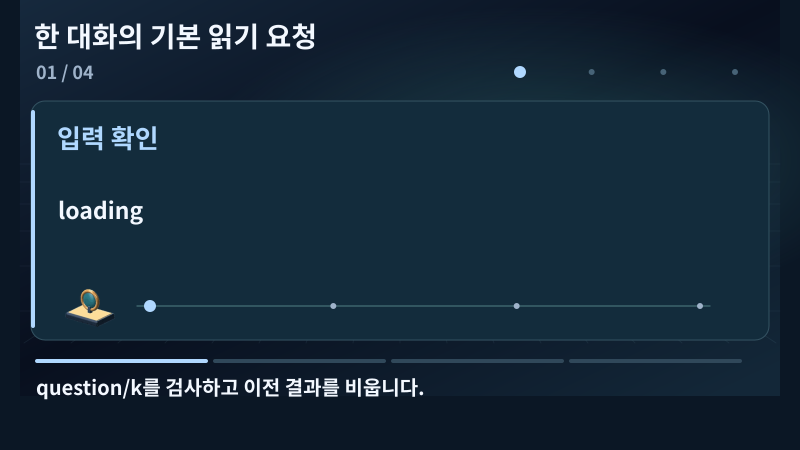
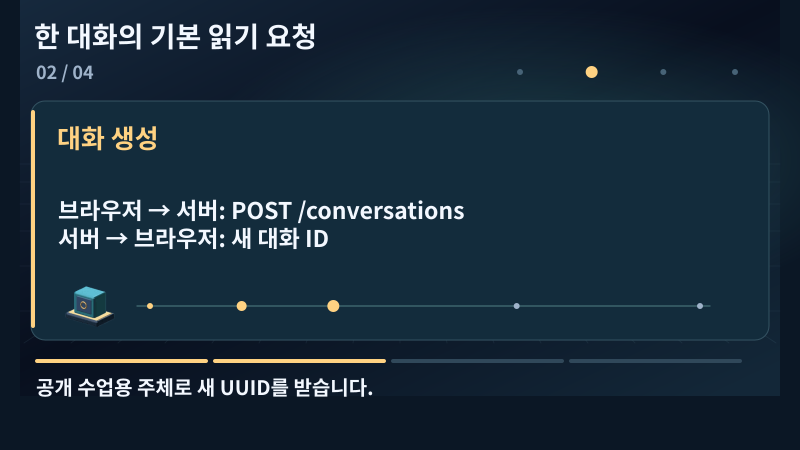
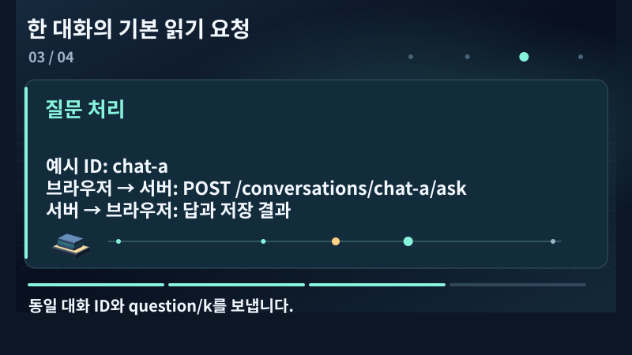
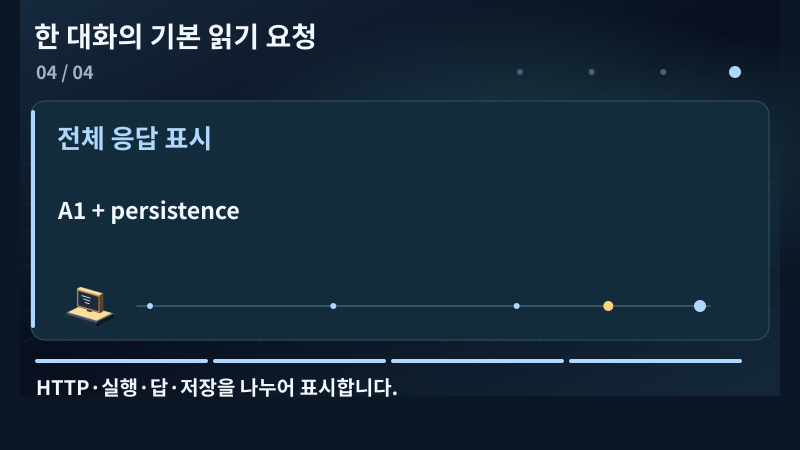

웹과 API 연결
과정 안내 질문을 입력하고 전송을 누르면 어떤 값이 보내질까요? 78장의 투두 화면에서 입력칸과 버튼을 구별했습니다. 이번에는 별도 과정 안내 사례를 사용합니다. 노트북에서 submit 이벤트와 HTTP 응답을 재현하며 화면에 넣을 문장을 선택합니다.
수업 노트북
실행을 확인한 커널은 Python 3.12.15입니다.
입력 이벤트에서 요청 본문 꺼내기
‘입력 이벤트’에서 출발해 ‘요청 본문’를 거친 뒤 ‘API’가 되는 순서를 따라가세요.
폼에 쓴 질문이 API 요청 본문에 들어갑니다.
브라우저의 submit 처리기는 event.preventDefault()로 기본 페이지 이동을 막고 입력값의 양끝을 정리합니다. 노트북에서는 Node.js가 설치된 수업 커널에서 실제 JavaScript를 실행합니다. DOM을 띄우지 않고 표준 EventTarget을 이용해 제출 동작만 재현합니다.
셀 01 · 제공 셀 · JavaScript 실행 준비
코드를 바꿀 곳은 다음 셀의 JavaScript입니다. 제공 함수는 실행 결과를 노트북에 표시합니다.
import subprocess
def run_js(source):
run = subprocess.run(["node", "--input-type=module", "-e", source],
text=True, capture_output=True, check=True, timeout=10)
print(run.stdout.rstrip())함수를 정의했습니다. 별도의 JS 파일을 만들 필요가 없습니다.
셀 02 · submit에서 질문을 수신하기
질문 양끝에 있는 공백이 JSON 본문에 남을지 예측하세요.
run_js("""
const form = new EventTarget();
const input = {value: " 과제는 어디에 내나요? "};
form.addEventListener("submit", event => {
event.preventDefault();
const body = {question: input.value.trim(), k: 2};
console.log(JSON.stringify(body));
});
form.dispatchEvent(new Event("submit", {cancelable: true}));
""")실행 결과
{"question":"과제는 어디에 내나요?","k":2}JSON에는 정리한 question과 검색 개수 k가 담겼습니다. 이 단계에서는 네트워크 요청이나 답변 표시가 일어나지 않았습니다.
응답이 도착한 뒤 본문 읽기
‘응답 도착’에서 출발해 ‘본문 읽기’를 거친 뒤 ‘답 표시’가 되는 순서를 따라가세요.
응답이 도착한 뒤 본문에서 답과 출처를 읽습니다.
실제 화면의 transport.mjs는 fetch 함수를 전달받습니다. 이 셀에서는 수업용 응답을 주는 함수를 넣어 요청과 화면 사이를 재현합니다. 실제 서버 주소에서는 해당 함수 자리에 브라우저 fetch를 넣습니다.
셀 03 · 응답의 A1 답변을 화면에 넣기
fetch 응답과 JSON 해석을 각각 await합니다. 여기서 element는 화면 요소의 textContent 속성만 흉내 낸 객체입니다.
run_js("""
const fixtureFetch = async (_url, options) => {
const { question } = JSON.parse(options.body);
if (question !== "과제는 어디에 내나요?") return new Response(null, {status: 422});
return Response.json({result: {answer: "과제함에 제출하세요. [course-guide-v1:p2]"}});
};
const response = await fixtureFetch("/conversations/chat-a/ask", {
method: "POST", headers: {"Content-Type":"application/json"},
body: JSON.stringify({question:"과제는 어디에 내나요?", k:2})
});
if (!response.ok) throw Error("HTTP " + response.status);
const body = await response.json();
const element = {textContent: ""};
element.textContent = body.result.answer;
console.log(element.textContent);
""")실행 결과
과제함에 제출하세요. [course-guide-v1:p2]
표시할 텍스트에는 출처 ID가 남았습니다. innerHTML로 문자열을 해석하지 않고 textContent에 넣으면 답에 꺾쇠가 있더라도 문구로 다룰 수 있습니다.
과제 04 · 실패 시 JSON 읽기 전에 분기하기
404 응답의 ok를 읽어 ‘대화를 찾을 수 없습니다’라는 문구를 선택하는 JavaScript를 작성하세요.
빈 본문을 돌려준 404에서는 JSON을 읽기 전에 멈춥니다. 저장 실패 503의 응답에는 이미 만든 답과 저장 경고가 남을 수 있습니다. 상태 코드를 확인한 뒤 그 API가 약속한 오류 본문 형식에 따라 읽으세요.
# run_js에 JavaScript를 전달하세요.풀이와 실행 결과 보기
run_js('const r = new Response(null,{status:404}); console.log(r.ok ? "완료" : "대화를 찾을 수 없습니다");')실행 결과
대화를 찾을 수 없습니다
404 응답은 Promise가 정상적으로 돌아올 수 있어도 ok는 false입니다. HTTP 오류와 연결 자체가 끊겨 Promise가 거절된 경우를 따로 처리합니다. 셀에서 응답을 준비한 곳은 Node입니다. 브라우저에서 확인할 때는 첫 POST 응답의 대화 ID를 다음 POST가 실제로 보내는지 개발자 도구의 네트워크 기록에서 대조하세요.
다시 풀어 보기
같은 대화에서 이전 요청의 늦은 응답이 새 답변을 덮을 수 있습니다. 제출할 때 요청 번호를 기억하고 화면을 바꾸기 직전 현재 요청인지 확인할 위치를 찾아보세요.
관련 개념 더 읽기
과정 안내 질문을 화면에 연결하기
오늘은 78일의 입력·버튼·결과 구조를 별도의 과정 안내 질문 패널에 재사용합니다. 질문을 보내고 답변·출처·실패 상태를 읽는 것이 목표입니다. 에이전트의 답을 할 일 목록에 저장하지 않습니다. 80일의 Todo 동작과 81일의 CRUD API는 다른 데이터 계약입니다.
첫 15분에는 69일 api/session-stream-results.json의 대화/스트림과 78일 todo/wireframe.html을 찾습니다. 제공 파일은 최종 69 준비 앱의 정확 사본과 UI 코드입니다. 실제 FastAPI·브라우저·DB 실행은 이번 제작에서 수행하지 않았습니다. 기본 화면은 합성 응답으로 작동하도록 구성되어 있고 실 HTTP 전환은 비활성화되어 있습니다.
문자열·객체·배열·함수부터 읽기
const는 이 이름에 다른 값을 다시 대입하지 않겠다는 선언입니다. 문자열은 따옴표 안의 글자이고, 객체는 이름 있는 값들을 중괄호에 묶습니다. 배열은 순서 있는 값들의 목록입니다. question과 k를 객체로 묶으면 요청에 무엇을 보낼지 한 곳에서 확인할 수 있습니다.
함수는 이름 또는 인수로 전달해 나중에 실행할 수 있는 코드입니다. 제공 제어기는 요청 함수를 인수로 받습니다. 그러면 실제 fetch 대신 합성 응답 함수를 넣어 화면 상태를 검사할 수 있습니다. 이 검사는 실제 서버가 동작한다는 증거는 아닙니다.
답변은 HTML 코드가 아닌 텍스트로 표시
서버 답변이나 사용자의 입력에는 HTML처럼 보이는 글자가 들어갈 수 있습니다. 이를 innerHTML로 넣으면 브라우저가 태그로 해석할 수 있습니다. 이 예제는 textContent에 문자열을 대입하고 출처마다 li 요소를 만들어 텍스트로 채웁니다.
출처는 이름 하나로 줄이지 않습니다. id/text/source/page를 함께 표시해야 원문 위치를 찾아볼 수 있습니다. 새 요청이나 실패에서는 이전 출처 요소를 비워 이번 답변과 섞이지 않게 합니다. 형식 검사가 통과해도 원문이 실제로 답을 뒷받침하는지는 사람이 확인해야 합니다.
fetch와 await로 응답을 기다리기
fetch는 요청을 시작하고 Promise를 돌려줍니다. Promise는 결과가 아직 오지 않았을 수 있음을 표현합니다. async 함수 안에서 await로 결과를 기다리고, 실패는 try/catch로 처리합니다. 기다리는 동안 화면은 먼저 loading 상태가 되어야 합니다.
HTTP 404나 503도 Response로 돌아올 수 있습니다. 네트워크 오류와 HTTP 오류를 구분해야 합니다. 특히 이 H1은 저장 실패 503에 이미 완료된 답변을 보존합니다. response.ok가 false라고 본문을 버리면 답변과 저장 상태를 함께 잃습니다. 그래서 제공 transport는 status와 JSON 본문을 함께 반환합니다.
69일 H1 요청과 응답을 그대로 읽기
대화 생성은 POST /conversations, 질문은 POST /conversations/{conversation_id}/ask입니다. 요청 본문에는 question과 k만 보냅니다. 질문은 공백 아닌 문자열로 원래 입력 최대 1000 코드 포인트, k는 boolean을 제외한 정수 1~10이며 기본값은 2입니다. 서버가 사용자·검색 허용 범위·함수·모델을 정합니다.
JavaScript 문자열 length는 이모지를 두 단위로 셀 수 있습니다. 제공 입력 검사는 Array.from으로 코드 포인트를 세고 Python의 공백 제거 범위와 맞춥니다. 이 긴 검증 함수는 제공 코드로 읽고 학생은 입력·출력 경로를 설명합니다. 의미 없는 입력이 형식 제한을 통과했다고 좋은 질문이 되는 것은 아닙니다.
| 층 | 대표 필드 | 확인할 내용 |
|---|---|---|
| HTTP | 200/404/503 등 | 전송 경계의 상태 |
| 실행 | run_status/error_type/failure_stage | completed 또는 error |
| 답변 | result.status/answer/sources/generation_calls | A1 전체와 실제 인용 객체 |
| 저장 | persistence | 메모리 저장/저장 실패 |
| 추적 | request_id/metadata/action_receipt | 원래 봉투 보존 |
대화 식별과 공개 수업용 주체
대화 ID는 서버가 만든 UUID입니다. 같은 대화의 다음 질문은 이 ID를 다시 사용합니다. course-alice/course-bob 헤더는 소유권 분리를 관찰하기 위한 공개 수업 대역입니다. 누구나 값을 알 수 있으므로 실제 로그인이나 비밀 인증으로 사용할 수 없습니다.
한 대화의 기본 읽기 요청
실제 앱은 첫 응답에서 받은 대화 ID를 두 번째 요청 경로에 넣습니다. 셀 03은 대화 생성이 끝났다고 두고 chat-a부터 시작합니다.
첫 응답의 대화 ID가 다음 질문 요청의 경로에 들어가는 곳을 보세요.
서버가 만든 대화 ID를 다음 요청에 사용해야 질문과 응답이 같은 대화로 이어집니다.
- 011
- 022
- 033
- 044

STEP 01 · 브라우저입력 확인
question/k를 검사하고 이전 결과를 비웁니다.
loading

STEP 02 · 브라우저와 서버대화 생성
공개 수업용 주체로 새 UUID를 받습니다.
브라우저 → 서버: POST /conversations 서버 → 브라우저: 새 대화 ID

STEP 03 · 브라우저와 서버질문 처리
동일 대화 ID와 question/k를 보냅니다.
예시 ID: chat-a 브라우저 → 서버: POST /conversations/chat-a/ask 서버 → 브라우저: 답과 저장 결과

STEP 04 · 브라우저전체 응답 표시
HTTP·실행·답·저장을 나누어 표시합니다.
A1 + persistence
정상·빈 근거·실행 오류·저장 실패
HTTP 200이어도 A1이 answered인지는 따로 읽습니다. no_evidence는 정상 검색에서 필요한 근거를 얻지 못한 결과이고 invalid_citation은 출처 검증 실패입니다. 검색/실행 장애를 빈 근거로 바꾸면 무엇을 고쳐야 할지 사라집니다.
69의 저장 실패 503은 특별히 중요합니다. 생성은 완료됐고 출처가 있는 A1도 남아 있지만 이력 저장이 실패한 상태입니다. 화면은 답변을 보존하고 저장 경고를 따로 보여 줍니다. 자동 재시도하면 같은 요청을 다시 실행할 수 있으므로 하지 않습니다. 정상 메모리 저장도 재시작 후 보존되는 DB 저장은 아닙니다.
| 사례 | HTTP | A1/화면 | 보존 |
|---|---|---|---|
| 정상 모양 | 200 | answered / success | 출처 1개·메모리 저장 |
| 빈 근거 | 200 | no_evidence / success | 출처 0개 |
| 잘못된 인용 | 200 | invalid_citation / success | 출처 0개 |
| 저장 실패 | 503 | answered / storage_failed | 완료 답·출처·실패 persistence |
| 자원 오류 | 404 | result null / error | 안전한 오류 본문 |
| 상류 오류 | 504 | result null / error | 전체 error 봉투 |
| JSON 오류 | 200 | invalid_json | HTTP 상태 보존 |
| 연결 오류 | 미수신 | network_or_runtime | 이전 답/출처 제거 |
취소·늦은 응답·스트림의 차이
AbortController는 클라이언트의 대기와 응답 읽기를 중단할 때 사용합니다. 서버에서 이미 처리한 일이나 과금을 되돌리는 기능은 아닙니다. 취소 뒤에도 이전 요청의 결과가 도착할 수 있다고 보고 요청 번호 serial을 비교합니다.
이전 성공뿐 아니라 이전 오류와 finally도 새 요청을 덮지 못해야 합니다. 새 대화와 주체 변경에서도 번호를 바꾸고 이전 응답을 무시합니다. 기본 실습은 완성 JSON 한 건입니다. 69의 /stream은 검증된 답을 NDJSON의 start/delta/done 또는 error로 나누며 실제 모델 토큰 스트리밍이 아닙니다. NDJSON을 response.json 한 번으로 읽지 않습니다.
69 스트림은 모든 청크를 보낸 뒤 이력 저장을 하고 done을 보냅니다. 저장 직후 연결이 끊기면 화면이 done을 못 받아도 서버에 기록이 남았을 수 있습니다. 따라서 취소나 연결 오류만 보고 저장되지 않았다고 단정하지 않습니다.
origin·CORS·서버 비밀의 위치
origin은 scheme·host·port의 조합입니다. 같은 localhost여도 포트가 다르면 다른 origin입니다. 이 예제는 강사가 준비한 같은 origin의 경로를 기본으로 합니다. 다른 origin을 쓸 때는 서버의 정확한 허용 목록과 preflight를 확인해야 하며 no-cors로 응답 읽기 문제를 숨기지 않습니다.
CORS는 브라우저의 교차 출처 읽기 경계이고 사용자 인증을 대신하지 않습니다. 연결 오류 TypeError만으로 CORS가 원인이라고 단정하지 않습니다. 서버 로그와 네트워크 관찰은 강사가 제공한 환경에서 별도로 확인합니다. LLM·DB·AWS 키는 서버에 두고 프런트 코드·URL·localStorage에 넣지 않습니다.
serve_prepared.py의 create_app은 변경하지 않은 69일 API에 /web/ 화면 파일만 추가하는 제공 factory입니다. factory는 앱 객체를 만드는 함수입니다. 전체 examples나 application을 공개하지 않고 HTML·CSS·필수 mjs의 허용 목록만 제공합니다. 학생은 새 서버를 구현하지 않고 연결 경로를 읽습니다.
같은 examples 폴더에서 아래 준비 명령을 실행하면 사용할 화면 주소는 http://127.0.0.1:8000/web/question-panel.html입니다. API_BASE는 빈 문자열을 유지하여 루트 /conversations에 요청합니다. /web을 API 주소로 넣지 않습니다. worker 1의 메모리 앱이므로 서버 재시작은 대화를 보존하지 않습니다. 이번 제작에서는 서버를 실행하지 않았습니다.
준비 HTTP 검사와 학생 실습
제공 application은 69 최종 소비 목록과 같은 상대 경로로 복사했습니다. 실제 로컬 S1·메모리 검사는 선행 독립 검수 근거를 사용하고, 이 장에서는 UI의 요청/응답 접점과 합성 상태를 검사합니다. 전체 application 중 일부 파일만 임의로 떼면 import와 자료 경로가 끊길 수 있습니다.
추가로 cross_h1.py는 복사한 69일 순수 Python에서 정상·타인 자원·공백·시간 초과·저장 503을 만들고 check_cross_h1.mjs로 전체 본문 보존을 확인했습니다. 실제 로컬 S1 scripted 호출 1회를 사용했으며 실제 HTTP나 LLM 호출은 아닙니다.
80일 투두와 81일 CRUD에 옮길 것
오늘 넘길 것은 입력 검증, 이벤트, JSON, 비동기 상태 처리, 실패 기록의 원리입니다. H1 답변과 출처를 Todo 데이터로 옮기지 않습니다. 80일은 별도 T1의 id/title/completed와 로컬 추가·명시적 완료 설정·삭제를 만들고, 81일은 그 데이터의 CRUD API를 다룹니다.